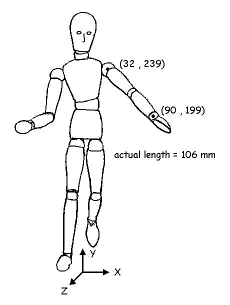

3-D Forces and Kinematics (continued)
Can we use trigonometry to find the third dimension?
Consider the 3-D manikin pictured to the right. It can be seen that the left leg appears shorter than the right which indicates that the left knee is flexed and that the left leg has an orientation that is not in the X-Y plane. Similarly, the left arm is also "out of plane". We could use the X and Y coordinates to calculate the length and if this is shorter than the actual length, we could find out how much the segment is "out of plane".

The arm is rotated out of plane such that it has a length of 79.2 mm in the Z direction. The direction cosine can also be calculated.

This method works in theory but we do not know if the wrist is 79.2 mm in front of the shoulder or 79.2 mm behind the shoulder. The direction cosine could be a positive 42 degrees or a negative 42 degrees. This method is also quite prone to small errors in the X and Y coordinates in practice. For these reasons, two different views are needed to get the X, Y and Z coordinates in biomechanics.